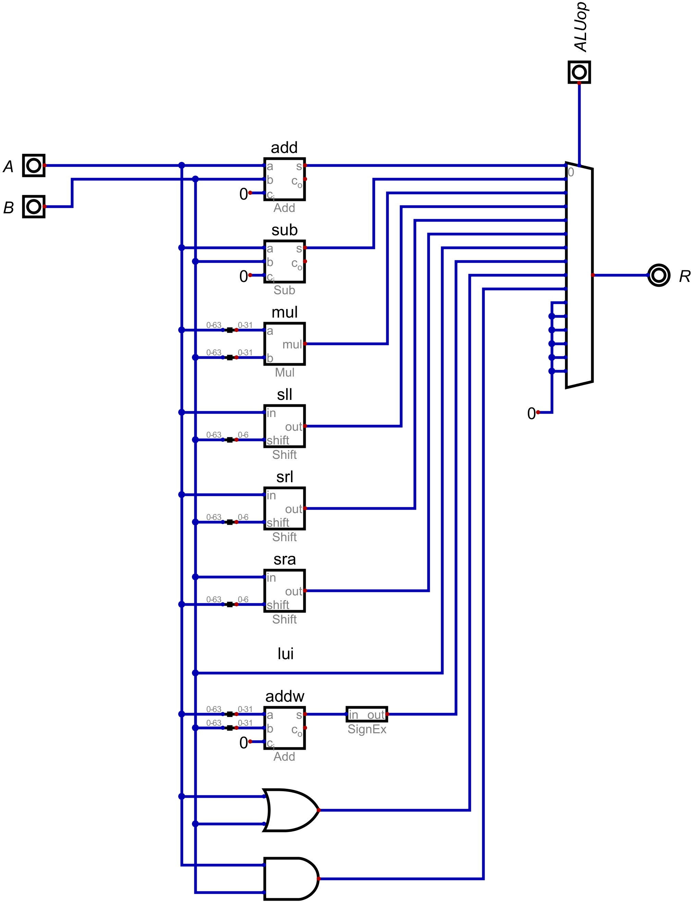
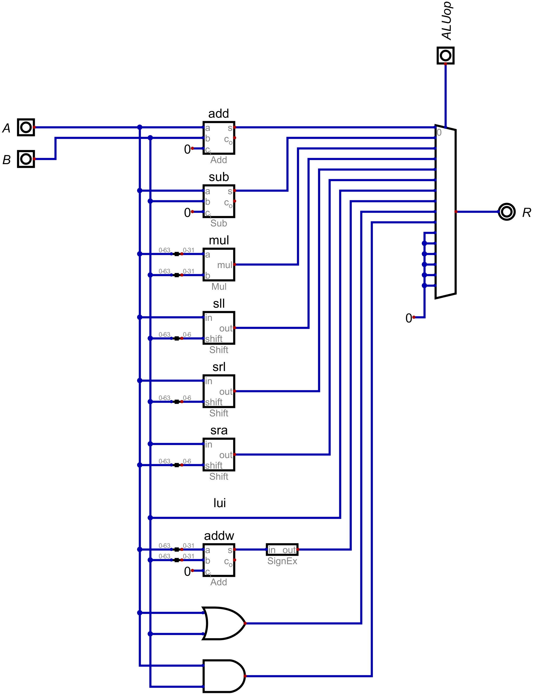

The full processor.
Instruction memory.
The full processor.
Instruction memory.
 Register file.

Arithmetic Logic Unit (ALU).
Hazard detection unit.
Register file.

Arithmetic Logic Unit (ALU).
Hazard detection unit.
Processor Schematic
This is a pipelined processor schematic that I designed as part of my Digital Design class at USF. I started with basic logic gates, and combined them to create more complex components like multiplexers, adders, and decoders. I then used these components to build more components, and eventually the main parts of the processor, including the ALU, register file, instruction memory, and control unit. Every component and embedded circuit, and all of those components' embedded circuits were built by hand and reused in various places to build the processor.
Instruction Fetch (IF) Stage
This stage of the processor fetches the next instruction to be executed from memory. The instructions are input through the PROG input. The Program counter keeps track of the current instruction address, and the instruction memory (mem-inst) outputs the instruction word at that address. The PC is incremented by 4 to point to the next instruction word. The instruction word is then sent to the Decode Register Read (DR) stage via the IF/DR Register.
Decode Register Read (DR) Stage
In this stage, the instruction word is decoded to determine the operation to be performed. It is sent to the Instruction Decoder (decoder-inst), which determines what operation is being performed and sets the control signals accordingly. It is also sent to the RegDecoder which determines the source and destination registers. The Register File (RegFile) reads the values of the source registers given by the register decoder. The operand values, immediate values, and control signals are then sent to the Execute (EX) stage via the DR/EX Register.
Execute (EX) Stage
The Execute stage is the where the actual computation happens. If the instruction is a branch, the branch unit evaluates the branch condition and calculates the target address. If the instruction is an arithmetic operation, the Arithmetic Logic Unit (ALU) performs the operation on the operands provided by the Register File. The ALU determines which operation to perform based on the control signals from the Instruction Decoder. This stage is also where the Immediate Decoder (ImmDecoder) lives, which decodes the actual values to be used by the ALU from the instruction word. The results of the computation are sent to the Memory (MEM) stage via the EX/MEM Register.
Memory (MEM) Stage
In the Memory (MEM) Stage, the processopr interacts with the machine's memory. IF the instruction determined previously is a load or store operation, the RAM unit reads from or writes to the memory address computed by the ALU in the previous stage. The stored or read values are passed along to the MEM/WB register. If the instruction is not a load or store, the MEM stage is skipped completely, and the outputs from the EX/MEM registetr are wired straght to the Write Back (WB) stage.
Write Back (WB) Stage
The Write Back (WB) stage is the final stage of the processor pipeline. A multiplexer chooses between the ALU result and the value read from memory based on the control signal from the instruction decoder. The selected value is then written into the destination register in the register file. Once written, the stage is ready for the next instruction.
Hazard Detection Unit
The Hazard Detection Unit is active through every stage of the pipeline proceessor. Its purpose is to ensure that each stage of the pipeline has the correct data to work with, and that no stage is trying to read or write to a register that is currently being written to by another stage. It also ensures that data which is needed by the next or previous stage is available, even though the data might have not made it thorugh the pipeline yet.
(describe hazards and solutions)